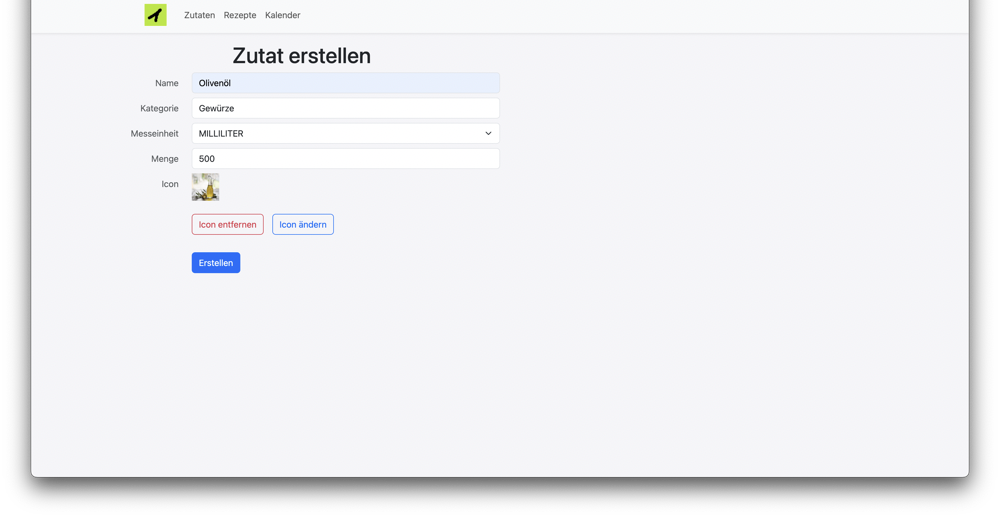
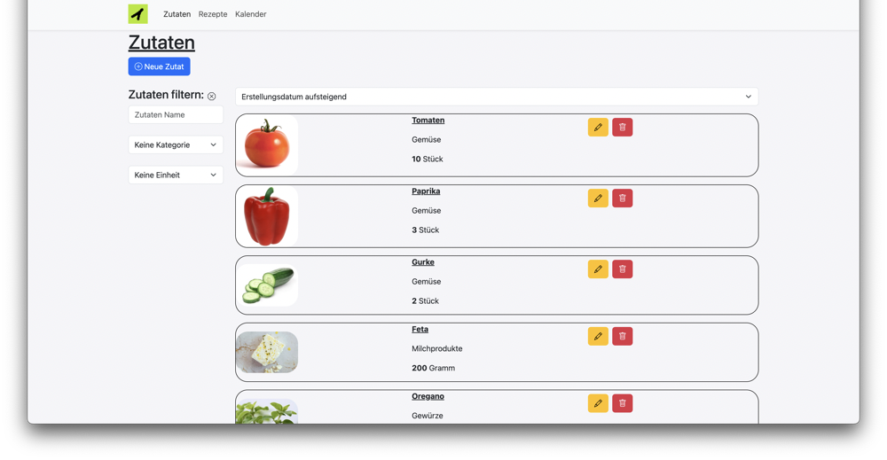
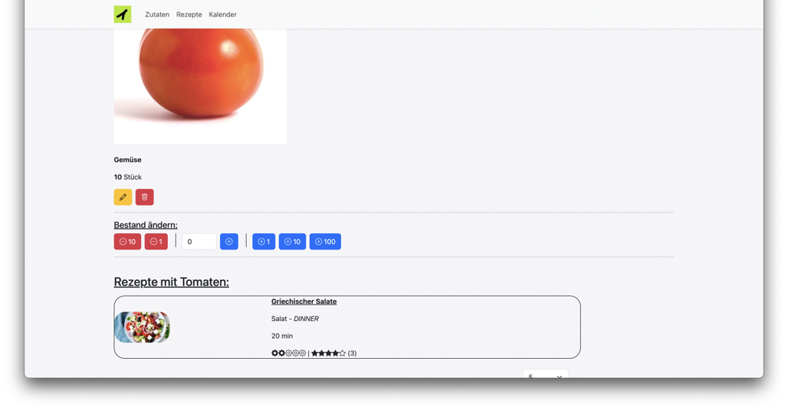
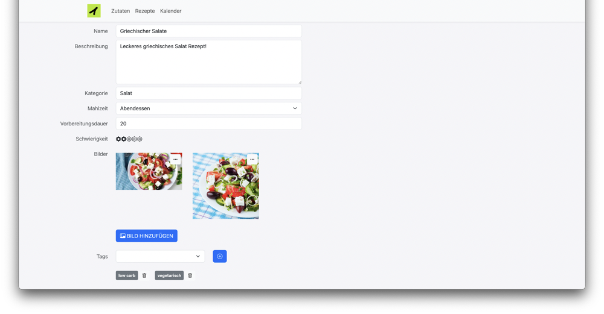
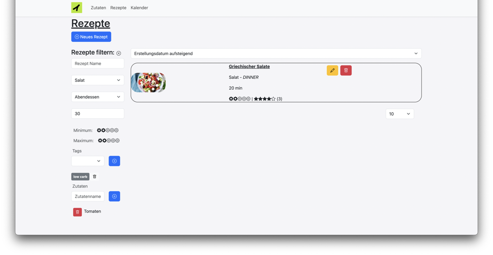
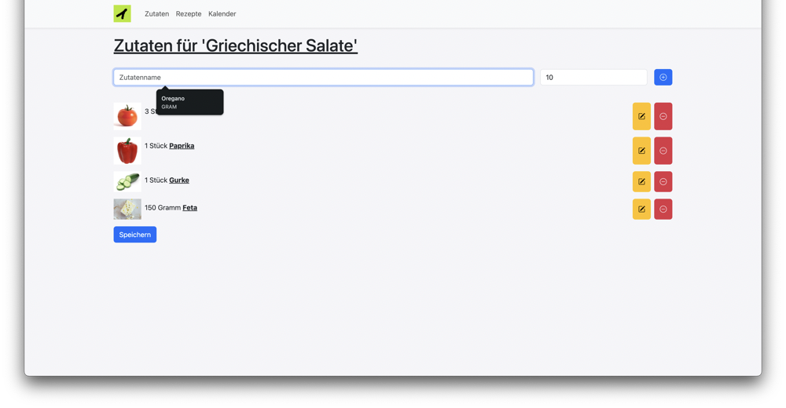
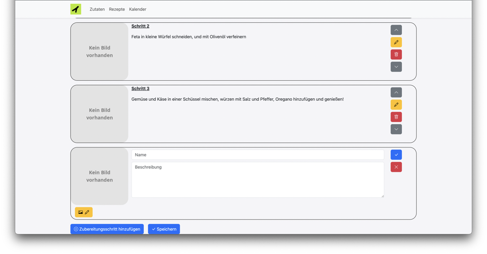
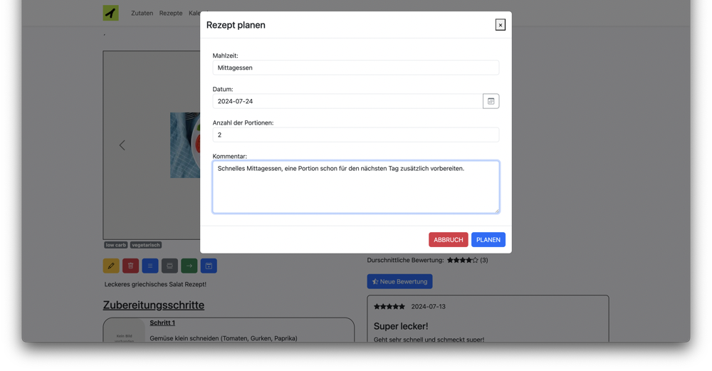
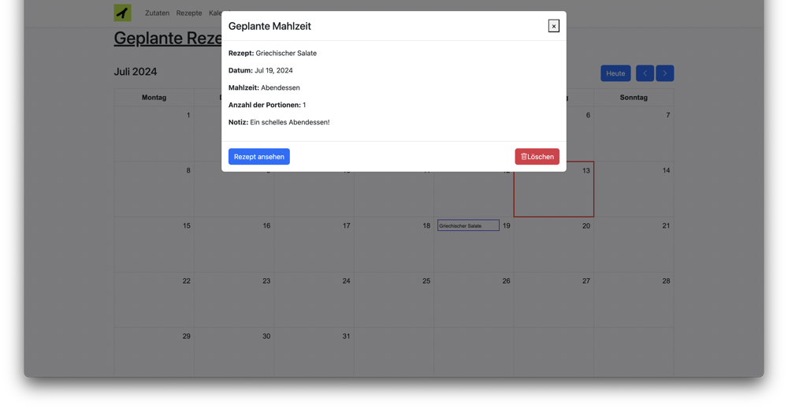

Recipe Planer
Your all-in-one digital cookbook and smart grocery planner for seamless meal preparation and shopping!
Source code
Concept
Everyone knows that feeling, you have a few tomatoes, peppers, some cucumber left in the fridge. What meal could you prepare with those ingredients to avoid them going to waste.
Of course! A greek salad would be a perfect fit, but what else do I need, and how can I come up with those receipes if my ingredients are more exotic?
Let me introduce Recipe Planer, a digital cookbook and inventory management software, to keep track of the groceries you have at home and will need at home in order to cook your favourite receipes!
Features
Amongst many feature we support:
- Creation of new ingredients (name, category, image, measure unit) / Edit
- Filtering of ingredients (according to custom criterias) and ability to have a detail view for each ingredient
- Creation of new recipes (name, description, preparation time, category, custom images)
- Ability to add recipe steps, ingredients, reviews to a recipe
- Filtering of recipes to find the perfect recipe (filtering by classical filters, by difficulty, by ingredients contained in the recipe)
- Detailed View of a Recipe and ability to plan a recipe in the integrated calendar
- See calendar of all planed meals
Possible expansions
Some further features have not been implemented yet but are in planing (see the GitHub Issues):
- Plan a grocery store trip in the store
- Recipe recommendation based on available ingredients
- Automatically generate a grocery list based on the planed recipes
Further features could be added later on (but are not planed yet), for instance:
- Price comparaison of ingredient prices in most popular supermarkets (BILLA, SPAR, HOFER…)
- Integration of the webapplication with voice assistants (such as Amazon Alexa) to interact by voice with the program
- Programmatically prefill the recipe list and ingredient list by fetching data from the internet
- Recipe recommendation on a start page
- Estimate the amount of calories in each recipe
- Ability to export the calendar with planed recipes and grocery store trips to ICAL.
Application Screenshots

Creation / Edit View for new ingredients

List view of ingredients, with the ability to filter them by name, category and measure unit. Pagination of variable size of ingredients has been implemented for higher optimization.

Detailed View for each ingredient, including buttons to quickly update the available quantities of the given ingredient

Recipe creation / edit view, with a tagging system and image upload (image order can be shuffled around, the first image is the cover image for a recipe)

Recipe list view with the ability to filter them by name, category, difficulty, preparation duration, meal type, tags and included ingredients

Recipe Detailed View with an image carousel, ingredient list, action buttons (Edit, Delete, Ingredient Edit, Recipe Steps Edit, Cook recipe, Plan recipe on calendar), recipe steps, recipe ratings

Recipe Ingredients Edit View, with ingredient recommendation based on the entered name, and ability to edit or remove any added ingredient or quantities.

Recipe Step Edit View, add new recipe steps, reorder them, add images for each.

Recipe planing pop-up, plan a recipe in the integrated calendar for better overview and organization.

Integrated calendar with overview of all planed recipes, and further information upon clicking on one planed recipe
Technical Details
The frontend has been implemented with Angular and BootStrap. The backend has been implemented with SpringBoot, JPA and a H2 DB.
Issues and user stories are being tracked with GitHub. The documentation of the project (ER-Diagramm, User Story list) can be found in the GitHub Wiki.